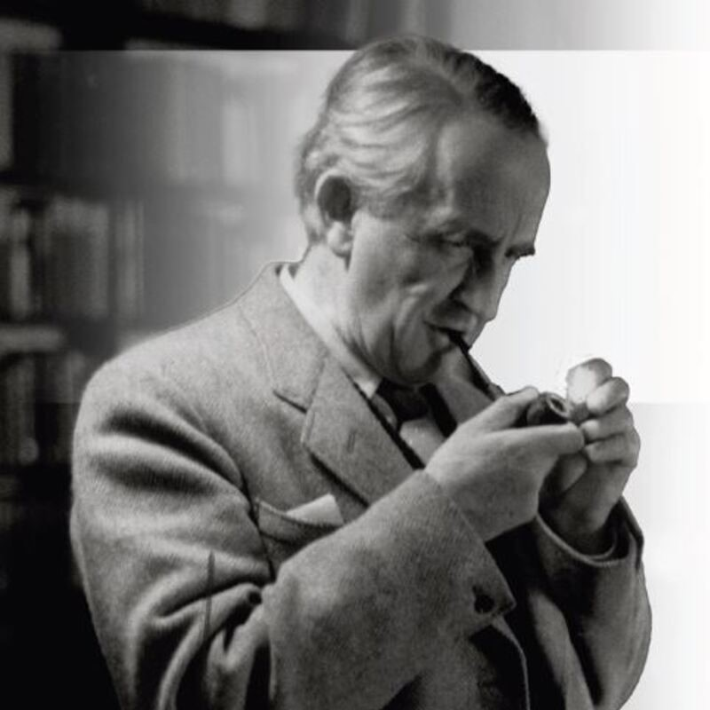

Crear entrada
Brandon Sanderson, el mayor autor de fantasía del siglo XXI
Brandon Sanderson es un escritor de fantasía actual conocido por su obra del Cosmere, el principal universo de fantasía moderna, que conjunta sagas como "Mistborn" o "The Stormlight Archive". Nació en EEUU, en el estado de Nebraska. Actualmente es escritor y profesor en la universidad Brigham Young. A día de hoy sigue escribiendo nuevas sagas, aumentando su lista de libros y llegando cada vez a más lectores.
Ver másLaura Gallego, la fantasía española para los jovenes
Laura Gallego García es una escritora de fantasía española conocida por sus libros de fantasía infatil y juvenil, cómo "Guardianes de la Ciudadela" o "Memorias de Idhún". Nació en Valencia, dónde empezó a escribir a muy temprana edad y estudio filología hispánica. Actualmente es escritora a tiepo completo, con 27 novelas juveniles publicadas y algunos cuentos infantiles también.
Ver másJRR Tolkien, el genio detrás de El Señor de los Anillos
John Ronal Reuel Tolkien fue un escritor de fantasía del siglo XX conocido por su obra del Legendarium, el mundo de El Señor de los Anillos y El Hobbit. Este nació en Sudáfica y murió en Reino Unido. Tuvo una larga vida como escritor y profesor en Oxford, dejándo un legado que por mucho tiempo será recordado.
 Ver más